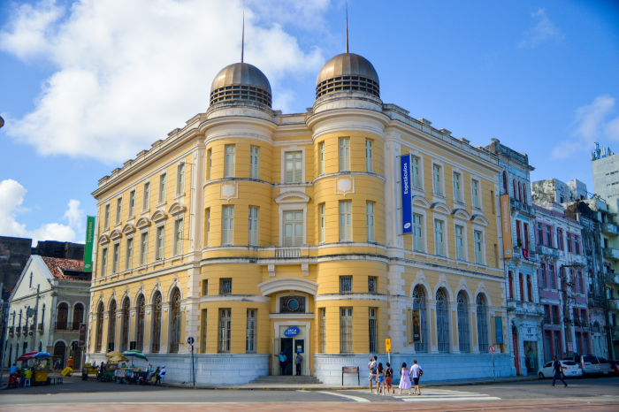

Inaugurado em 1912 para ser a sede do Bank of London & South America Limited, o imponente edifício neoclássico se tornou em 1977, a sede da Bolsa de Valores de Pernambuco e da Paraíba. Em 2006, foi comprado pela Caixa Econômica Federal que transformou o espaço na Caixa Cultural Recife.